Узлуксиз тасодифий микдорларнинг сонли тавсифлари
Дискрет тасодифий микдорлар каби узлуксиз тасодифий микдорлар хам сонли тавсифларга эга. Узлуксиз тасодифий микдорнинг математик кутилмаси ва дисперсиясини кўриб чикайлик.
Х узлуксиз тасодифий
микдор 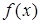 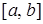
Мумкин бўлган кийматлари кесмага тегишли бўлган Х узлуксиз тасодифий микдорнинг математик кутилмаси деб куйидаги аник интегралга айтилади:
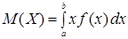
Агар мумкин бўлган кийматлар бутун Ох сонли ўкка тегишли бўлса, у холда математик кутилма куйидаги кўринишга эга
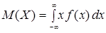
Мумкин бўлган кийматлари кесмага тегишли бўлган Х узлуксиз тасодифий микдорнинг дисперсияси деб куйидаги аник интегралга айтилади:
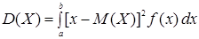
Агар мумкин бўлган кийматлар бутун Ох сонли ўкка тегишли бўлса, у холда дисперсия куйидаги кўринишга эга
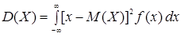
Дисперсияни хисоблаш учун мос равишда
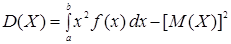
ва
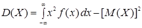
формулалар кулайрок.
Дискрет тасодифий микдорлар математик кутилмаси ва дисперсиясининг хоссалари узлуксиз тасодифий микдорлар учун хам сакланади.
Узлуксиз тасодифий микдорнинг ўртача квадратик четланиши дискрет тасодифий микдор учун бўлгани каби куйидаги тенглик билан аникланади
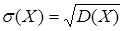
1-мисол. Куйидаги таксимот функцияси билан берилган Х тасодифий микдорнинг математик кутилмаси, дисперсияси ва ўртача квадратик четланиши топилсин:
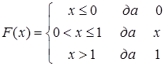
Ечиш. Зичлик функциясини топамиз:
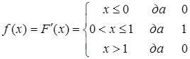
Математик кутилмани (8.1) формула бўйича топамиз:
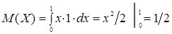
Дисперсияни (8.5) формула бўйича топамиз:
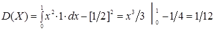
Ўртача квадратик четланишни (8.7) формула бўйича топамиз:
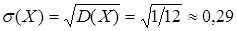
Амалиётдан келиб чикадиган масалаларни хал килишда узлуксиз т
асодифий микдорларнинг турли таксимотлари билан иш кўришга тўгри келади. Узлуксиз тасодифий микдорларнинг зичлик функциялари таксимот конунлари хам деб аталади. Нормал, текис ва кўрсаткичли таксимот конунлари энг кўп учрайди.
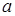 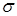 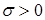
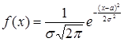
зичлик функцияси билан тасвирланадиган узлуксиз тасодифий микдорнинг эхтимолликлари таксимотига айтилади.
Бу ердан кўриниб турибдики, нормал таксимот иккита ва параметрлар билан аникланади. Нормал таксимотни бериш учун бу параметрларни билиш кифоя.
Бу параметрларнинг
эхтимолий маъносини кўрайлик. Демак, 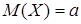 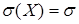
Нормал тасодифий микдорнинг таксимот функцияси
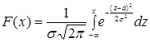
кўринишда бўлади.
Умумий нормал таксимот деб ихтиёрий 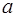 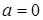 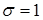
Стандарт нормал таксимотнинг зичлик функцияси
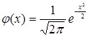
кўринишда эканлигини кўриш осон. Бу функция бизга 4-мавзуда учраган. Унинг кийматлари адабиётлардаги махсус жадвалларда келтирилган.
Ихтиёрий ва параметрли нормал тасодифий
микдорнинг 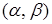 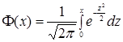
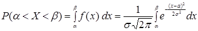
эканлигини кўрамиз.
Янги 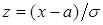 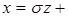 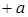 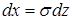 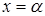 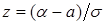 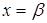 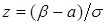
Шундай килиб,
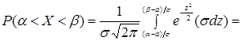
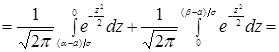
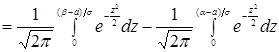
бўлади.
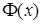
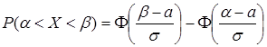
ни оламиз.
Хусусан, Х
стандарт нормал тасодифий
микдорнинг 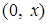
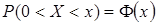
га тенг, чунки бу холда ва .
2-мисол. Х тасодифий
микдор нормал конун бўйича
таксимланган. Бу микдорнинг математик
кутилмаси ва ўртача квадратик четланиши мос равишда 30 ва 10 га тенг. Х
нинг 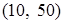
Ечиш. (8.11) формуладан фойдаланамиз.
Шартга кўра 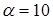 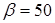 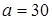 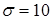
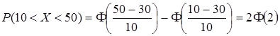
Жадвалдан 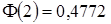
Нормал таксимот зичлик функциясининг графиги нормал эгри чизик (Гаусс эгри чизиги) деб аталади. Бу график 8.1-расмда тасвирланган.
8.1-расм.
кесмадаги текис таксимот деб зичлик функцияси
(8.13)
кўринишда бўлган, барча мумкин бўлган кийматлари ушбу кесмага тегишли бўлган Х тасодифий микдорнинг эхтимолликлари таксимотига айтилади.
да текис таксимланган тасодифий микдорнинг таксимот функцияси
(8.14)
кўринишга эга.
Текис таксимотнинг зичлик функцияси графиги 8.2-расмда, таксимот функцияси графиги эса 7.3-расмда келтирилган.
Текис таксимланган тасодифий микдорнинг математик кутилмаси ва дисперсиясини хисоблаймиз. (8.1) формулага асосан
ни оламиз.
| |||||
8.2-расм.
Сўнгра, (8.5) формулага асосан
эканлиги келиб чикади.
Энди да текис таксимланган Х узлуксиз тасодифий микдорнинг нинг ичида ётган интервалга тегишли киймат кабул килишининг эхтимоллигини топамиз.
Аввалги параграфдаги 1-теорема ва (8.13) формуладан фойдаланиб,
ни ёки
(8.15)
ни оламиз.
Кўрсаткичли (экспоненциал) таксимот деб
(8.16)
зичлик функцияси билан тасвирланадиган
Х узлуксиз тасодифий
микдорнинг эхтимолликлари таксимотига айтилади, бу ерда  — ўзгармас мусбат
катталик.
— ўзгармас мусбат
катталик.
Таърифдан кўриниб турибдики,
кўрсаткичли таксимот битта  параметр билан
аникланади. Кўрсаткичли конуннинг таксимот функциясини топамиз:
параметр билан
аникланади. Кўрсаткичли конуннинг таксимот функциясини топамиз:
.
Демак,
(8.17)
Кўрсаткичли конуннинг зичлик ва таксимот функцияларининг графиклари 8.3-расмда тасвирланган.
8.3-расм.
(8.17) формуладаги кўрсаткичли конун бўйича таксимланган Х узлуксиз тасодифий микдорнинг интервалга тегишли киймат кабул килишининг эхтимоллигини топамиз. (7.4) формуладан фойдаланиб,
ни ёки
(8.18)
ни оламиз.
3-мисол. Х узлуксиз тасодифий микдор
кўрсаткичли конун бўйича таксимланган. Тажриба натижасида Х тасодифий микдор интервалга тегишли киймат кабул килишининг эхтимоллиги топилсин.
Ечиш. Шартга кўра . (8.18) формуладан фойдаланамиз:
Кўрсаткичли таксимот
параметрининг эхтимолий маъносини кўрайлик. Кўрсаткичли таксимотнинг математик
кутилмаси ва ўртача квадратик четланиши  параметрнинг тескари
кийматига тенг, яъни
ва .
параметрнинг тескари
кийматига тенг, яъни
ва .
4-мисол. Х узлуксиз тасодифий микдор
кўрсаткичли конун бўйича таксимланган. Х тасодифий микдорнинг математик кутилмаси, ўртача квадратик четланиши ва дисперсияси топилсин.
Ечиш. Шартга кўра . Демак,
;
.
Назорат учун саволлар:
1. Узлуксиз тасодифий микдорнинг математик кутилмаси нима?
2. Узлуксиз тасодифий микдорнинг дисперсияси нима ва у кандай хисобланади?
3. Нормал таксимот деб нимага айтилади?
4. Нормал таксимот параметрларининг эхтимолий маъноси канака?
5. Умумий ва стандарт нормал таксимотлар нима, уларнинг зичлик ва таксимот функциялари канака?
6. Нормал тасодифий микдорнинг берилган интервалдаги кийматни кабул килиши эхтимоллиги кандай топилади?
7. Текис таксимот деб нимага айтилади?
8. Текис таксимланган тасодифий микдорнинг математик кутилмаси ва дисперсияси кандай хисобланади?
9. Текис таксимланган тасодифий микдорнинг берилган интервалдаги кийматни кабул килиши эхтимоллиги кандай топилади?
10. Кўрсаткичли таксимот деб нимага айтилади?
11. Кўрсаткичли тасодифий микдорнинг берилган интервалдаги кийматни кабул килиши эхтимоллиги кандай топилади?
12. Кўрсаткичли таксимот параметрининг эхтимолий маъноси канака?